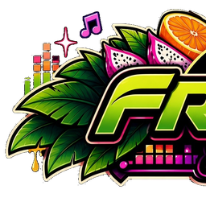
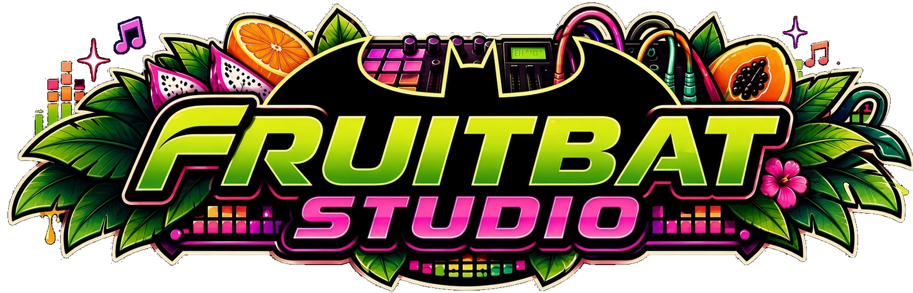
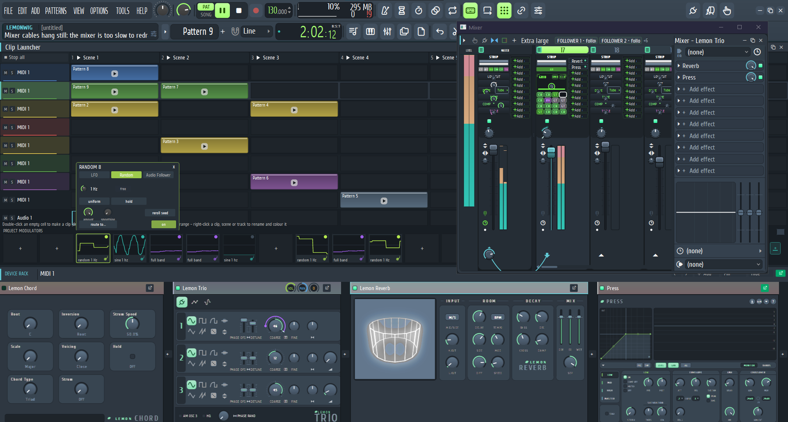
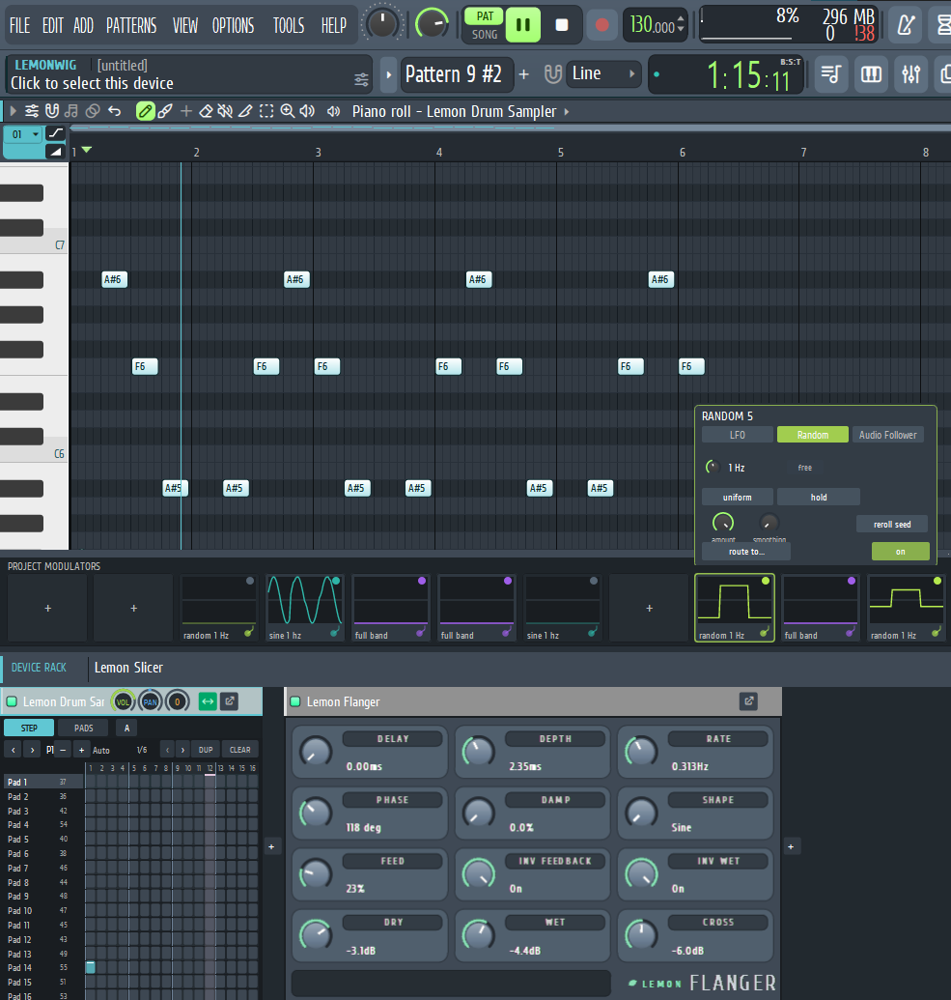

◆Hybrid workflow
Fast pattern-based sequencing for the arrangement, with modular signal routing and live parameter modulation on the same tracks.

FruitBat Studio
Lightning-fast pattern stamping and channel-rack ergonomics meet the deep, cable-routed modulation and routing of modular workstations — a native Rust audio engine on Windows, Linux and macOS.

One workspace that keeps the fast ideas from classic pattern sequencers and the deep ideas from modular hosts — without making you choose between them.
Fast pattern-based sequencing for the arrangement, with modular signal routing and live parameter modulation on the same tracks.
A sample-accurate Rust engine with a fast CPU-rendered interface, running on WASAPI/ASIO, ALSA and Core Audio.
Connect LFOs, random sources and audio followers to instrument, effect and mixer parameters on the fly — and automate the same parameters on the timeline.
Scenes, clips, launch quantisation, follow actions, per-track stop, mute and solo, and keyboard navigation alongside the classic playlist.
Built for interchange rather than lock-in: DAWproject, the open XML-based project format from Bitwig and PreSonus, plus other DAWs' save formats, alongside FruitBat's own lossless .lemon file.
CLAP, VST3 and VST2 instruments and effects, with their own editors docked into the FruitBat workspace.
Deep botanical greens, passionfruit purples and midnight obsidian styling, with the Meridian, Lemon, Lemon Industrial and Citrus skins.
GPL-3.0-or-later, written in Rust 2024, developed in public with an audited status document that says what actually works.
A project should not be trapped in the workstation that made it. FruitBat's project layer is being built around open, documented interchange rather than a single vendor's save file.
DAWproject is the open, XML-based project format from Bitwig and PreSonus: a single
.dawproject bundle holding the arrangement — tracks, clips, notes, automation,
device parameters and the audio the project references — readable by any host that implements the spec.
Tracks, musical data and mixer state stay editable on the other side, not flattened to audio.
Alongside DAWproject, the goal is to read and write the save formats other workstations actually produce, and to fall back to Standard MIDI Files plus rendered stems where a format cannot be mapped losslessly. Projects move between tools without a rebuild by hand.
.lemonFruitBat's own project file stays the lossless save for everything unique to it — launcher scenes and clips, modulators and their routings, skins, track state — with nothing silently dropped. An interchange format is for moving projects; the native file is for keeping them.
.lemon project file.
DAWproject read/write and the per-format importers are the next milestones, tracked in the
status audit.
Notes, project modulators and docked device editors sit together, so a filter sweep you drew in the rack is the same value the engine hears at the next block boundary.
Automation belongs to the playlist track that owns the device, modulation belongs to the modulators — two systems, two clear workflows, one engine.

You need a Rust toolchain (2024 edition) and your platform's C++ build tools. The full, known-good recipe for each platform lives in docs/build.md.
# clone the repository
git clone https://github.com/Chimthuwu/Fruitbat-Studio.git
cd Fruitbat-Studio
# build the workstation
cargo build --release -p os-app
# the binary lands in target/release/lemonstudioNo builds are published yet — watch the releases page for the first packaged ones.
FruitBat Studio is pre-alpha. The interface shows more than the engine can do today, and the project is deliberately honest about the gap: every claim in the README is checked against the code.
The current, tested picture of what works, what is partial and what is planned is in the status audit.